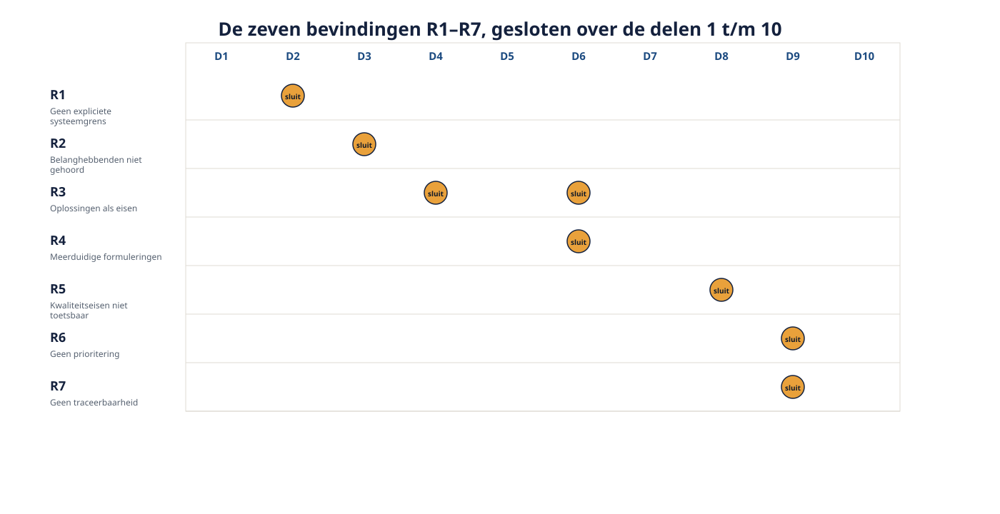
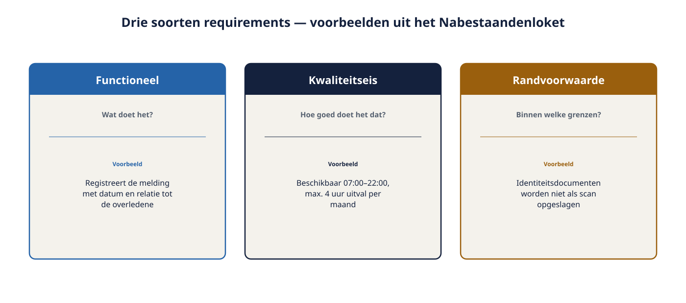
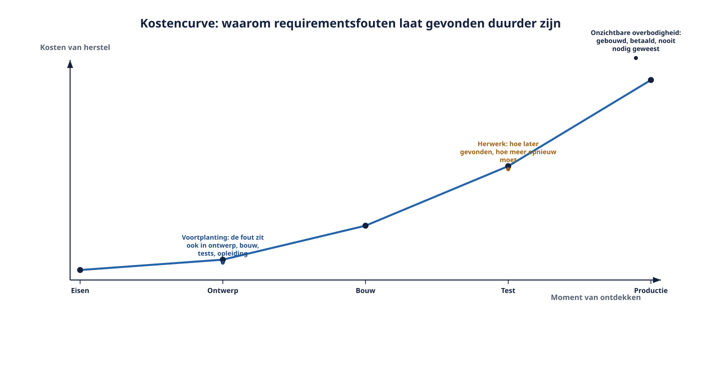

Deel 1 — Wat requirements engineering is, en waarom WGP 2.0 erop strandde
Reader · Ductus-cursus Requirements engineering · niveau 1 (fundament) · deel 1 van 10
Cursus Requirements Engineering — Ductus. Deze cursus bereidt voor op de CPRE-certificering van IREB en is uitdrukkelijk geen vervanging van het officiële syllabus- en examenmateriaal.
Leerdoelen
Na dit deel kun je:
- uitleggen wat een requirement is en welke soorten er zijn;
- de vier kernactiviteiten van requirements engineering benoemen en uit elkaar houden;
- de rol en de grenzen van de rol van requirements engineer beschrijven;
- onderbouwen waarom fouten in requirements onevenredig duur zijn;
- een mislukt project analyseren op requirementsoorzaken in plaats van op symptomen.
1.1 Een teleurstelling om mee te beginnen
Op 14 november 2025 besloot de directie van Meridiaan Pensioen te stoppen met WGP 2.0. Bijna twee jaar werk, een extern bouwteam, een functioneel ontwerp van 340 pagina's. Het portaal draait nergens.
Het opvallendste aan de post-mortem is wat er niet in staat. Er staat niet dat de techniek tekortschoot. De leverandersorganisatie bouwde in hoofdlijnen wat er gespecificeerd was. Er staat ook niet dat er te weinig is gedocumenteerd — 340 pagina's is meer dan de meeste projecten ooit produceren.
Wat er wel staat, komt neer op zeven bevindingen die allemaal over hetzelfde gaan: er is veel opgeschreven en weinig begrepen. De scope was nooit begrensd (R1). Mensen die het systeem dagelijks zouden gebruiken zijn niet gehoord (R2). Eisen waren geformuleerd als oplossingen, waardoor niemand meer wist welk probleem ze oplosten (R3). Zinnen betekenden voor vier afdelingen vier dingen (R4). "Snel" en "gebruiksvriendelijk" stonden er, zonder dat iemand kon vaststellen of het gehaald was (R5). Alles was even belangrijk, dus toen het geld op was, was er geen basis om te kiezen (R6). En de ruim vierhonderd wijzigingen die tijdens de bouw zijn doorgevoerd, zijn nooit teruggekoppeld aan de eisen waar ze vandaan kwamen (R7).
"Het project is niet gestrand op wat men niet kon bouwen, maar op wat men niet had opgeschreven."
— uit de post-mortem WGP 2.0
Die zin is bijna waar. Preciezer geformuleerd, en dat is het vak dat je in deze cursus leert: het project is gestrand op wat men had opgeschreven zónder dat het gedeeld begrepen, begrensd, toetsbaar, geprioriteerd en herleidbaar was.
Deze zeven bevindingen zijn de rode draad van niveau 1. Elk deel sluit er één of meer af. In deel 10 verdedig je hoe je ze in een nieuwe aanpak hebt afgedekt.

1.2 Wat is een requirement?
In het dagelijks spraakgebruik zijn "eis", "wens", "behoefte" en "specificatie" inwisselbaar. In dit vak zijn ze dat niet.
Werkdefinitie (Ductus): een requirement is een vastgelegde behoefte of voorwaarde waaraan een systeem of organisatie moet voldoen om waarde te leveren aan een belanghebbende, geformuleerd zó dat vast te stellen is of eraan is voldaan.
Drie elementen daaruit verdienen aandacht.
"Van een belanghebbende." Een requirement zonder herkomst is een aanname. Bij elk requirement hoort de vraag: wie vindt dit, en waarom?
"Om waarde te leveren." Een requirement bestaat niet omdat het leuk is. Het bestaat omdat er anders iets misgaat of iets niet gebeurt wat wél zou moeten. Kun je die waarde niet benoemen, dan heb je iets anders in handen — meestal een gewoonte of een oplossing waarop iemand verliefd is geworden.
"Zó dat vast te stellen is of eraan is voldaan." Dit is het scherpst onderscheidende deel. "Het loket moet gebruiksvriendelijk zijn" is een intentie, geen requirement. Pas als je kunt zeggen wanneer het niet gehaald is, heb je iets waarop je kunt bouwen en testen.
Drie soorten requirements
Functionele requirements beschrijven wat het systeem doet: welke gegevens het verwerkt, welk gedrag het vertoont, welke uitkomsten het levert. "Het loket registreert een overlijdensmelding met de datum van overlijden, de relatie van de melder tot de overledene en het polisnummer."
Kwaliteitseisen beschrijven hoe goed het dat doet: snelheid, beschikbaarheid, begrijpelijkheid, beveiliging, onderhoudbaarheid. Dit is waar WGP 2.0 het liet afweten (R5); deel 8 gaat er volledig over.
Randvoorwaarden zijn beperkingen waarbinnen de oplossing moet blijven en waarover niet onderhandeld wordt: wetgeving, bestaande systemen, een technologiekeuze, een datum. "Identiteitsdocumenten worden niet als scan opgeslagen." Dat is geen eis aan gedrag maar aan de speelruimte.
Het onderscheid is geen taxonomisch spelletje. Het bepaalt wie je ernaar moet vragen, hoe je het toetst en wat er gebeurt als je het schrapt. Randvoorwaarden schrappen kan meestal niet. Functionele requirements schrappen kost functionaliteit. Kwaliteitseisen schrappen kost — en dat is het verraderlijke — meestal niets zichtbaars, tot het misgaat.

Wat een requirement níet is
- Geen oplossing. "Een dropdownmenu met de relatie tot de overledene" beschrijft een schermelement. De eis eronder is dat de relatie tot de overledene bekend moet zijn omdat die het recht bepaalt. Wie de oplossing als eis opschrijft, geeft de ontwerpruimte weg zonder het te merken (R3).
- Geen wens zonder eigenaar. "Zou het niet mooi zijn als…" is materiaal, geen requirement — totdat iemand met belang en gezag het onderschrijft.
- Geen ontwerpbesluit van de bouwer. Dat de koppeling met KERN asynchroon is, is architectuur. Dat een melding binnen één werkdag in KERN zichtbaar moet zijn, is een requirement.
1.3 De vier kernactiviteiten
Requirements engineering bestaat uit vier activiteiten die elkaar voortdurend afwisselen.
1. Eliciteren — ophalen. Behoeften bestaan zelden in kant-en-klare vorm. Ze zitten in hoofden, in oude systemen, in werkinstructies, in wetgeving, in wat mensen doen zonder het te kunnen benoemen. Eliciteren is actief bovenhalen, niet passief ontvangen. Deel 3 en 4 gaan hierover.
2. Documenteren — vastleggen. In taal, in modellen, of in een combinatie. De vorm is een keuze, geen automatisme: een beslisregel hoort in een tabel, een proces in een procesmodel, een uitzondering in een zin. Deel 5 tot en met 8 gaan hierover.
3. Valideren en afstemmen — kloppend en gedragen maken. Klopt het met de werkelijke behoefte, en zijn de belanghebbenden het eens? Dat zijn twee verschillende vragen, en beide moeten met ja worden beantwoord. Deel 9 gaat hierover.
4. Beheren — bijhouden. Requirements veranderen. Prioriteiten schuiven, wetgeving verandert, inzicht groeit. Beheren betekent dat je weet welke versie geldt, wat de status is, en wat een wijziging elders raakt. Ook deel 9, en in niveau 2 een volledige module.

Let op de valkuil in de volgorde. Deze vier zijn geen fasen. WGP 2.0 behandelde ze wél als fasen: zeven maanden eliciteren en documenteren, dan een handtekening, dan bouwen. Het gevolg was dat elk voortschrijdend inzicht — en dat is er altijd — een wijzigingsverzoek werd in plaats van een verbetering. In de praktijk elicitieer je terwijl je documenteert (het opschrijven brengt vragen boven), valideer je terwijl je elicitieert (je toetst je begrip in het gesprek), en beheer je vanaf dag één.
Wat verandert er als je iteratief werkt?
Deze paragraaf staat in elk deel van deze cursus. RE@Agile is in deze opzet geen los onderwerp maar een terugkerende vraag.
Bij iteratief werken verdwijnen de vier activiteiten niet; ze worden kleiner en frequenter. Je elicitieert voor de eerstvolgende brok in plaats van voor het hele systeem, en je accepteert bewust dat de eisen voor later nog grof zijn. Wat níet verandert: dat je weet wie iets vindt, dat je het toetsbaar formuleert, en dat je bijhoudt wat er geldt. De vaakst gehoorde misvatting is dat agile werken requirements overbodig maakt. Wat het overbodig maakt, is het tegelijk vooraf compleet vastleggen ervan — een heel andere claim. Deel 21 werkt dit uit.
1.4 De rol van de requirements engineer
Ruben Doornbos is de eerste bij Meridiaan met deze titel. Dat betekent dat hij niet alleen het werk doet, maar de rol ook moet uitleggen.
Wat de rol wél is:
- vertaler tussen belanghebbenden die elkaars taal niet spreken;
- onderzoeker die vraagt waarom, ook als dat ongemakkelijk is;
- bewaker van precisie: dubbelzinnigheid opsporen en wegwerken;
- geheugen van het project: waar komt deze eis vandaan, wie vond dit, wat was het alternatief;
- degene die conflicten zichtbaar maakt in plaats van ze glad te strijken.
Wat de rol níet is:
- besluitvormer over scope, budget of prioriteit;
- ontwerper van de oplossing;
- notulist die opschrijft wat de hardste stem zegt;
- eigenaar van de businessdoelen.
Die tweede lijst is de belangrijkste van dit deel. De requirements engineer levert feiten, opties en consequenties; het besluit ligt bij anderen. Wie die grens laat vervagen, wordt of machteloos ("hij verzint maar wat") of gevaarlijk ("hij heeft dat blijkbaar besloten"). Dit motief komt in deze cursus terug tot en met de masterproef.
De rol grenst aan andere rollen. Een business analyst kijkt breder naar het bedrijfsprobleem en de organisatorische oplossing; een product owner beslist over prioriteit en waarde; een architect ontwerpt de structuur; een tester toetst het resultaat. In kleine organisaties valt dit alles op één paar schouders — dan is het des te nuttiger om te weten met welke pet je op dat moment zit.
↗ Raakvlak: de rolverdeling tussen product owner en requirements engineer komt uitgebreid terug in deel 21 en in de Ductus-cursus Scrum Master & Product Owner. Voor de bredere business-analysefunctie: de Ductus-cursus Business Analyse.
1.5 Waarom requirementsfouten zo duur zijn
Er is een oude vuistregel dat een fout die pas in productie wordt gevonden een veelvoud kost van dezelfde fout in de eisenfase. De exacte factor varieert per onderzoek en per soort systeem, en je moet er niet mee gaan rekenen alsof het een natuurconstante is. Het mechanisme erachter is wel robuust en dat is wat je moet kunnen uitleggen:
- Een fout in een requirement plant zich voort in alles wat erop volgt: ontwerp, bouw, testgevallen, documentatie, opleiding, werkinstructies.
- Hoe later hij wordt gevonden, hoe meer van dat afgeleide werk opnieuw moet.
- Sommige fouten worden helemaal niet gevonden. Het systeem doet dan keurig iets wat niemand nodig had — en dat blijft betaald worden in beheer.
Bij WGP 2.0 zit categorie 3 in de kern. Er is functionaliteit gebouwd waarvan tijdens de post-mortem niemand meer wist wie erom had gevraagd (R7).
Er is een tegenkracht die je even serieus moet nemen: eindeloos vooraf specificeren is óók duur, en levert schijnzekerheid. Zeven maanden specificeren heeft WGP 2.0 niet gered. Het antwoord is niet "meer requirements" maar "betere requirements, en op het juiste moment". Wat "beter" is, is het onderwerp van de rest van deze cursus.

1.6 De opdracht die op Rubens bureau landt
De opdracht voor het Nabestaandenloket is één alinea lang:
"Een online loket waar nabestaanden een overlijden kunnen melden en zien hoe het ervoor staat. Moet snel zijn en makkelijk in gebruik, ook voor oudere mensen. We willen minder telefoontjes. Het moet natuurlijk wel veilig, want het gaat om gevoelige gegevens. En het moet aansluiten op het uitkeringssysteem. Graag voor het einde van het jaar live."
Dit is geen slechte opdracht. Het is een normale opdracht. Er zit veel in: een doel (minder telefoontjes), gebruikers (nabestaanden, ook ouderen), kwaliteitsintenties (snel, makkelijk, veilig), een randvoorwaarde (aansluiten op KERN) en een termijn.
Er zit ook veel níet in. Wat betekent "melden" precies — is dat hetzelfde als "aangifte doen die rechtsgevolg heeft"? Wat is "de status"? Minder telefoontjes dan wat, en hoeveel minder is genoeg? Voor wie is het loket bedoeld als de nabestaande een bewindvoerder heeft? Wat gebeurt er als iemand een overlijden meldt dat niet klopt?
De vaardigheid die je in dit deel begint te oefenen, is dit onderscheid: zien wat er staat, zien wat er niet staat, en het tweede niet zelf stiekem invullen. Het invullen van gaten met eigen aannames is de meest voorkomende beginnersfout in dit vak, en de schadelijkste, omdat een aanname in de tekst niet te onderscheiden is van een gevalideerde eis.
Vuistregel voor de rest van de cursus: een ongestelde vraag is duurder dan een verkeerd beantwoorde. Een verkeerd antwoord komt aan het licht; een niet-gestelde vraag verstopt zich in de bouw.
1.7 Certificeringsaansluiting
Dit deel raakt aan de fundamenten die in het CPRE Foundation Level worden getoetst: het begrip requirement, de soorten, de kernactiviteiten, de rol, en het belang van requirements engineering. In deel 10 volgt de examentraining voor dit niveau.
Twee dingen om nu al te weten:
- Het Foundation Level-examen bestaat uit ongeveer 45 meerkeuzevragen in 75 minuten, waarbij vragen 1 tot 3 punten opleveren en je 70 procent van de punten nodig hebt. Er zijn geen toelatingseisen, en het certificaat verloopt niet.
- Alle vragen in deze cursus zijn eigen vragen in de stijl van het examen. Ze zijn geen letterlijke examenvragen en geen vervanging van het officiële syllabus- en oefenmateriaal van IREB.
Actuele examenvoorwaarden en syllabusversies kunnen wijzigen; controleer die altijd bij de certificeerder voordat je een examen inplant.
Samenvatting
- Een requirement is een vastgelegde, herleidbare, toetsbare behoefte of voorwaarde met waarde voor een belanghebbende.
- Drie soorten: functioneel, kwaliteitseis, randvoorwaarde — met verschillende bronnen, toetsen en gevolgen bij schrappen.
- Vier activiteiten: eliciteren, documenteren, valideren en afstemmen, beheren. Geen fasen maar een cyclus.
- De requirements engineer levert feiten, opties en consequenties; anderen beslissen.
- Requirementsfouten planten zich voort, veroorzaken herwerk en leiden tot systemen die niemand nodig had.
- WGP 2.0 strandde op zeven bevindingen die je in dit niveau één voor één leert voorkomen.
Begrippen
requirement · functioneel requirement · kwaliteitseis · randvoorwaarde · belanghebbende · eliciteren · documenteren · valideren · afstemmen · requirementsbeheer · scope · aanname
Leeswijzer naar het volgende deel
Deel 2 behandelt de fundamentele principes van het vak en het eerste concrete gereedschap: de systeemgrens en de context. Daarmee sluiten we bevinding R1.